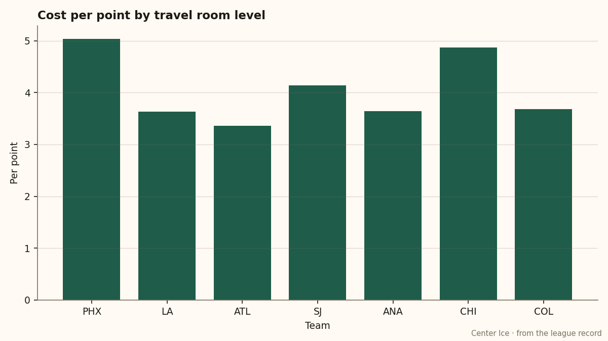
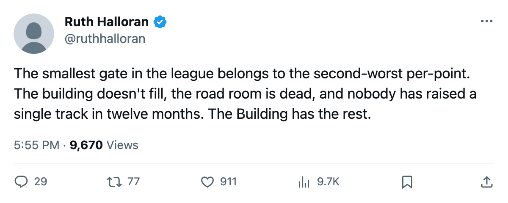
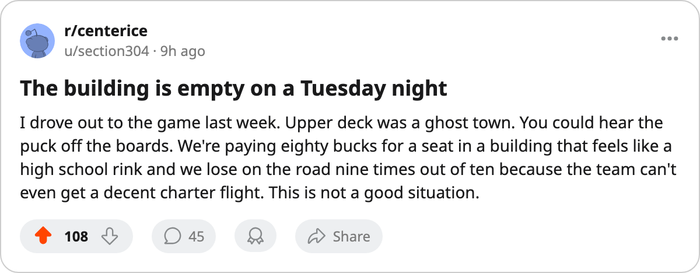

The Gate: $82 a Seat in Phoenix, and 11,426 Behind It
The smallest building in the league returns the least money, and the club's road room costs its men 6 attribute points a night with no way to stop it.
 Ruth HalloranBusiness of hockey · The Building
Ruth HalloranBusiness of hockey · The Building
11,426 fans fill the building in Phoenix. $82 a seat, the league standard, returns $31.97M in season revenue and $12.23M in profit. Both figures are the lowest of any club in this league.  New York Islanders draws 13,279 at the next rung down, and the top of the table sits at 18,188 in Toronto.
New York Islanders draws 13,279 at the next rung down, and the top of the table sits at 18,188 in Toronto.
The building is the problem at the gate, and the road is the problem on the ice.  Phoenix Coyotes runs its travel room at level 0, which the tuning file prices at minus 6 to all attributes. The Coyotes have played 9 games on the road this season and won 3. Every one of those nights costs their men 6 points to their attributes with no mechanism here that lets the club buy it back below level 1.
Phoenix Coyotes runs its travel room at level 0, which the tuning file prices at minus 6 to all attributes. The Coyotes have played 9 games on the road this season and won 3. Every one of those nights costs their men 6 points to their attributes with no mechanism here that lets the club buy it back below level 1.
Payroll sits at $55.41M, the 19th-highest in a 30-club league. The return is 11 points from 18 games, a rate of $5.04M per point, the second-worst in the league. Ottawa spends more and gets worse: $59.27M returns 11 points from 14 games at $5.39M a point. No club does more cheaply.

Seven clubs carry at least one of the four live tracks at level 0, the minus-6 floor. Those seven range across every revenue tier.  Los Angeles Kings has the worst building in the league at a live sum of minus 19 and gets $3.63M per point because its roster is cheaper. Phoenix Coyotes has the second-worst building among those seven at minus 16 and gets $5.04M per point because its payroll is mid-range and its wins are not.
Los Angeles Kings has the worst building in the league at a live sum of minus 19 and gets $3.63M per point because its roster is cheaper. Phoenix Coyotes has the second-worst building among those seven at minus 16 and gets $5.04M per point because its payroll is mid-range and its wins are not.
The other rooms read the same way. Equipment at 2, workout at 2, practice at 1. No track on the four that move a rating reaches level 3. The live sum is minus 16, tied with  Atlanta Thrashers,
Atlanta Thrashers,  Florida Panthers and
Florida Panthers and  St. Louis Blues for the third-worst in the league. Only Los Angeles Kings at minus 19 and
St. Louis Blues for the third-worst in the league. Only Los Angeles Kings at minus 19 and  Mighty Ducks of Anaheim at minus 18 are further behind.
Mighty Ducks of Anaheim at minus 18 are further behind.
Nobody has touched the building
The upgrade record has run since December 2004. Phoenix Coyotes has not raised a single room in that window. Every other club in the league has made at least one move. Phoenix Coyotes sits still.
Dan Knights has run the club at 592 prestige, 29th of 30 general managers in the league's standing. His prestige moved plus 2 since the last edition. His record reads 4-12-1, 11 points, with no cups and no playoff run past the second round.
The club's average morale sits at 89.8, the 7th-lowest of 30 clubs. Yves Mckay72 at 76 morale is one of the 15 unhappiest men in the league. The injury ledger carries 10 spells and 97 days lost for Phoenix, with Sillinger's back the longest single absence on the list.
What the gate should be doing here is filling the building so the revenue pays for a better roster. At 11,426 seats filled, $82 a seat, and 2-4 at home in front of that crowd, the building is asking its players to carry the gap between what it earns and what it spends. $55.41M in contracts, $31.97M in revenue. The road tax costs 6 points a night on 9 of the 18 games played. The rooms cost a further 10 to the live sum across the other tracks. The payroll buys 11 points.
The gate in Phoenix holds 11,426. The building returns $12.23M, the thinnest profit margin on the books. Knights will need more than a hot streak to close either gap, and nobody here has spent to raise a room in 12 months.

